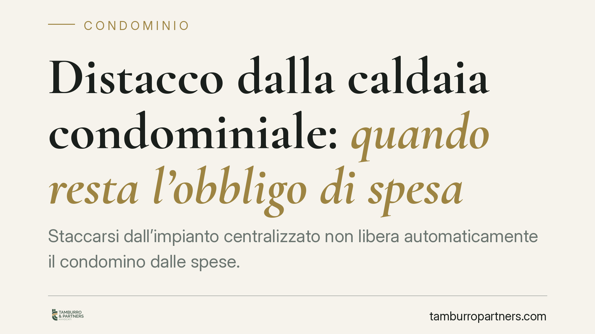

Distacco dalla caldaia condominiale: quando resta l'obbligo di spesa
Staccarsi dall'impianto centralizzato non libera automaticamente il condomino dalle spese. La legge distingue tra spese di gestione, di manutenzione straordinaria e di conservazione, e richiede una prova tecnica rigorosa dell'assenza di squilibri. Ecco cosa prevede l'articolo 1118 del codice civile e quali cautele adottare prima di procedere al distacco.

Il caso e perché conta
Un condomino decide di installare un impianto autonomo e di rinunciare alla caldaia centralizzata. Convinzione diffusa: dal momento del distacco, niente più contributi. La realtà normativa è più articolata. Il distacco è legittimo, ma non cancella ogni obbligo economico e, soprattutto, richiede la dimostrazione tecnica che l'operazione non danneggi l'impianto comune.
La questione tocca direttamente il portafoglio dei proprietari e la corretta amministrazione dei bilanci condominiali. Un distacco eseguito senza le verifiche necessarie può esporre il condomino a richieste di pagamento e a contenzioso.
Inquadramento normativo
Il riferimento è l'articolo 1118, terzo comma, del codice civile, come modificato dalla riforma del condominio (legge 220/2012). La norma stabilisce che il condomino può rinunciare all'uso dell'impianto centralizzato di riscaldamento o condizionamento, purché dal suo distacco non derivino notevoli squilibri di funzionamento o aggravi di spesa per gli altri condomini.
La stessa disposizione precisa che, anche in caso di distacco, il rinunciante resta tenuto a concorrere al pagamento delle spese per la manutenzione straordinaria dell'impianto e per la sua conservazione e messa a norma. In pratica, viene meno il contributo alle sole spese di consumo e gestione ordinaria collegate all'uso effettivo del servizio.
La giurisprudenza della Cassazione Civile, in pronunce consolidate degli ultimi anni, ha ribadito un punto decisivo: la prova dell'assenza di squilibri e aggravi grava sul condomino che intende distaccarsi. Non basta una dichiarazione: serve una relazione tecnica che attesti la compatibilità del distacco con il regolare funzionamento dell'impianto.
Cosa significa distacco "irreversibile"
Il termine indica una situazione in cui il ripristino del collegamento all'impianto comune è tecnicamente impossibile o comporterebbe interventi sproporzionati. Ma attenzione: l'irreversibilità del distacco non equivale all'esonero automatico dalle spese.
Anche quando il collegamento non è più ripristinabile, permane l'obbligo di contribuire alla conservazione e alla manutenzione straordinaria dell'impianto, che resta bene comune finché la collettività condominiale non ne dispone la dismissione con delibera assembleare. L'irreversibilità rileva sul piano fattuale, non su quello degli obblighi di legge.
Implicazioni pratiche
Per il condomino che valuta il distacco, il messaggio è chiaro: prima di agire occorre commissionare una perizia tecnica. Procedere senza documentazione espone al rischio che l'amministratore continui legittimamente a imputare le spese e che un'eventuale contestazione in sede assembleare o giudiziale si risolva a sfavore del rinunciante.
Per l'amministratore condominiale, il distacco unilaterale non autorizza a cancellare automaticamente il condomino da tutte le voci di spesa. La ripartizione va aggiornata solo per le spese di consumo, mantenendo l'imputazione per manutenzione straordinaria e conservazione.
Per gli altri proprietari, il punto di tutela è verificare che il distacco non generi squilibri termici o costi aggiuntivi a loro carico: se questo accade, il distacco può essere contestato.
Cosa fare in concreto
- Commissiona una relazione tecnica a un professionista abilitato prima di procedere: deve attestare l'assenza di squilibri di funzionamento e di aggravi di spesa per gli altri condomini.
- Comunica formalmente l'intenzione di distacco all'amministratore, allegando la perizia, e chiedi che la questione sia portata all'ordine del giorno.
- Distingui le voci di spesa: verifica che, dopo il distacco, restino a tuo carico solo manutenzione straordinaria e conservazione, non il consumo.
- Conserva la documentazione relativa all'impianto autonomo e alle verifiche tecniche: sarà decisiva in caso di contestazione.
- Non interrompere i pagamenti dovuti in attesa di chiarimenti: il mancato versamento delle quote legittime può generare azioni di recupero.
Un'ultima avvertenza
Ogni impianto ha caratteristiche proprie. La compatibilità del distacco va valutata caso per caso, sulla base della perizia e delle delibere assembleari. Consigliamo di affrontare la questione con un confronto tecnico-legale preliminare, per evitare che una scelta economicamente vantaggiosa sul breve periodo si traduca in contenzioso.
---
*Contributo informativo a cura di Tamburro & Partners - Avv. Giuseppe Tamburro. Non costituisce parere legale.*
Ogni condominio ha una storia a sé.
Se gestisci un'amministrazione e vuoi un confronto su una specifica questione condominiale, scrivi allo studio. Ti rispondiamo entro un giorno lavorativo.